Vegetazione: varietà e bruciatura
Ogni varietà ha due metà che non si sovrappongono: la pianta viva (tronco, rami, chioma) e quello che l’incendio aggiunge o scopre (scheletro dei rametti, cenere, legna caduta). Il legno della pianta viva si carbonizza sul posto: nessuno scambio di modelli. Le immagini mostrano sei fasi dell’incendio, seguendo le regole dello shader.
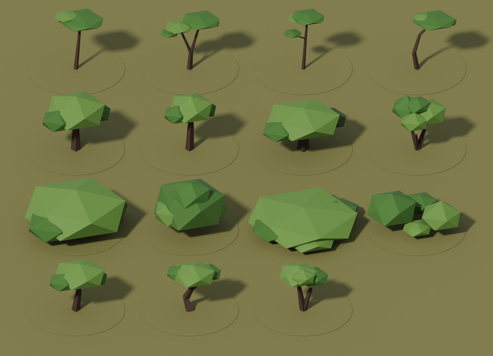
Le 15 varietà, vive. 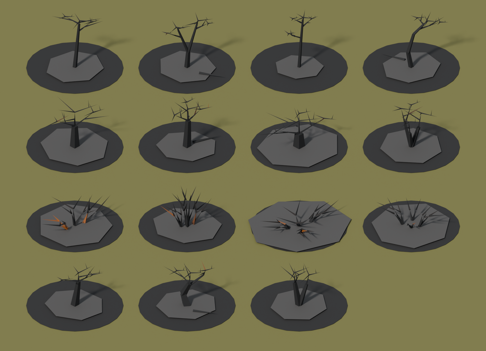
Le stesse, a incendio finito. Vivo Scottatura Fiamme Chioma consumata Scheletro Bruciato
Pino marittimo conifere 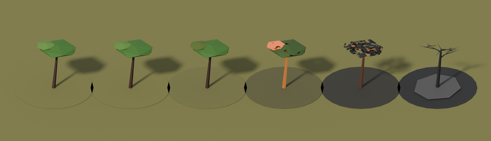
pine_1 — Classico: tronco inclinato e ombrello a tre cuscini.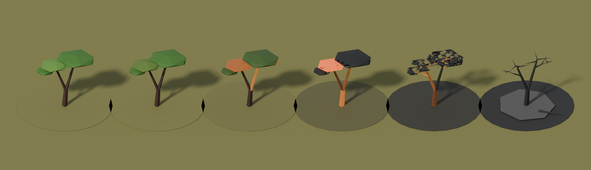
pine_2 — Gemello: due fusti che partono dalla stessa base.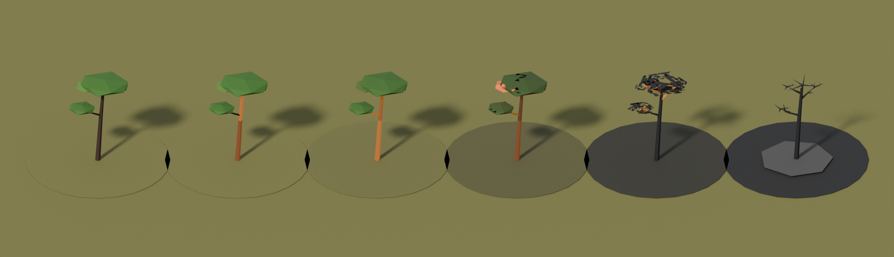
pine_3 — Slanciato: fusto alto e ombrello stretto, un ramo basso.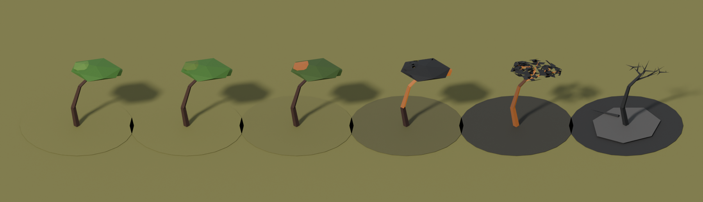
pine_4 — Piegato dal vento: fusto curvo e chioma spostata sottovento.Castagno latifoglie 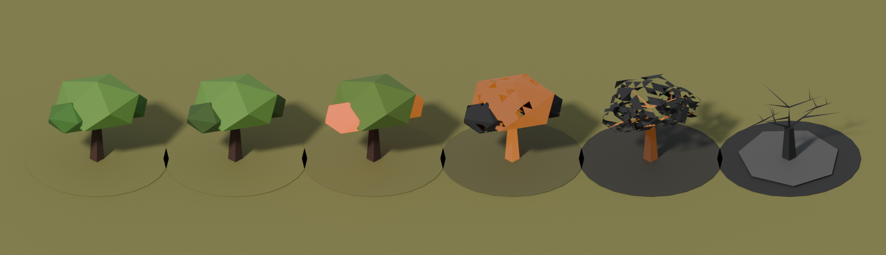
chestnut_1 — Classico: tronco tozzo e chioma tonda a lobi.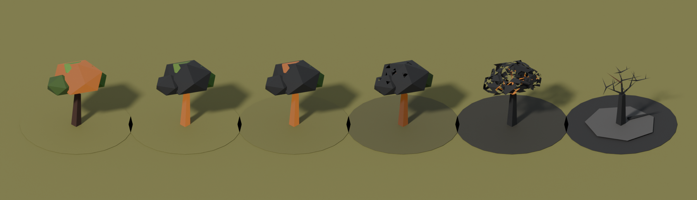
chestnut_2 — Alto: tronco lungo e chioma raccolta.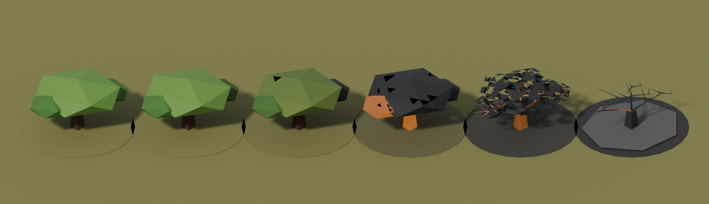
chestnut_3 — Largo e basso: chioma ampia su un fusto corto.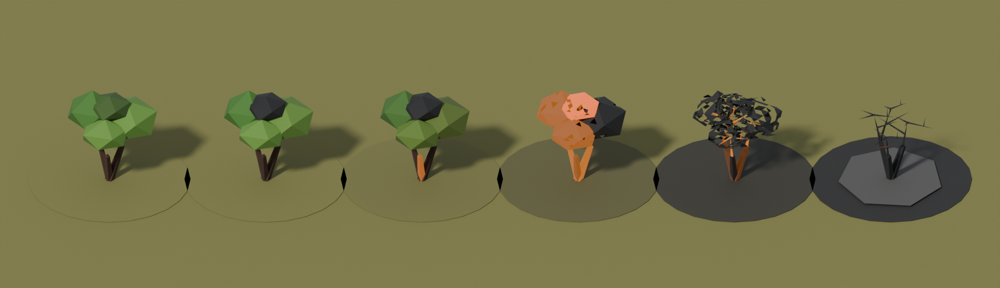
chestnut_4 — Ceduo: tre polloni che si aprono dalla ceppaia.Macchia arbusti 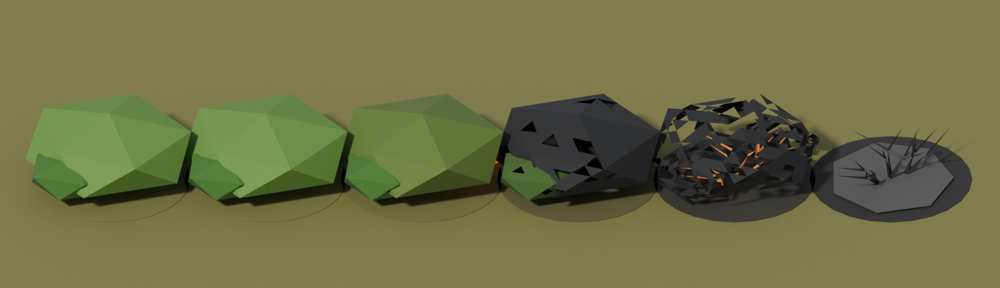
bush_1 — Classico: cuore tondo e due lobi.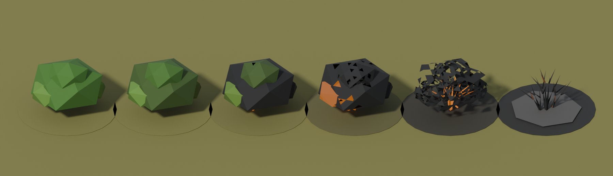
bush_2 — Alto (lentisco): un mazzo compatto e più slanciato.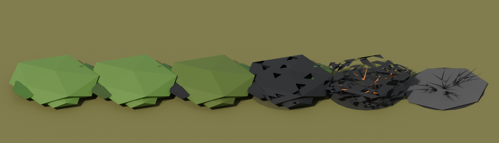
bush_3 — Tappeto basso (cisto): largo e piatto, quattro lobi.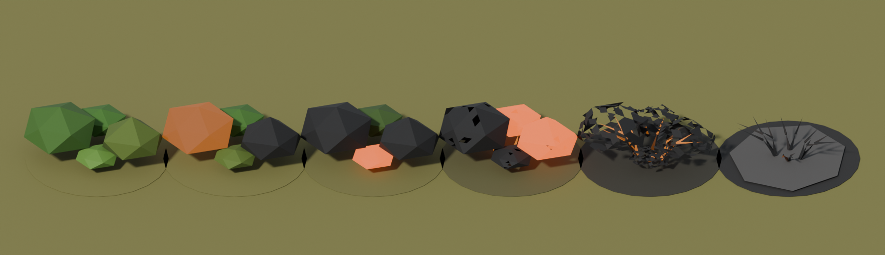
bush_4 — Rado: tre ciuffi staccati con spazi tra uno e l'altro.Ulivo alberi isolati nei prati 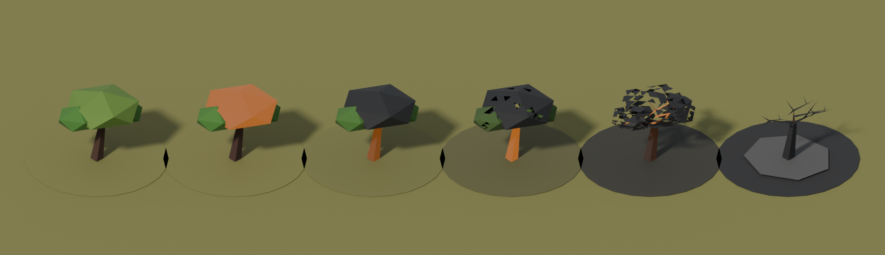
olive_1 — Classico: tronco nodoso e tre cime argentate.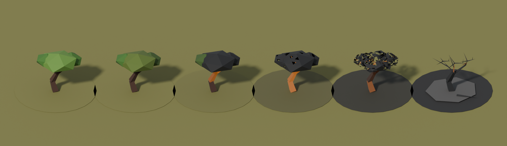
olive_2 — Contorto: tronco a S con un grosso ramo laterale.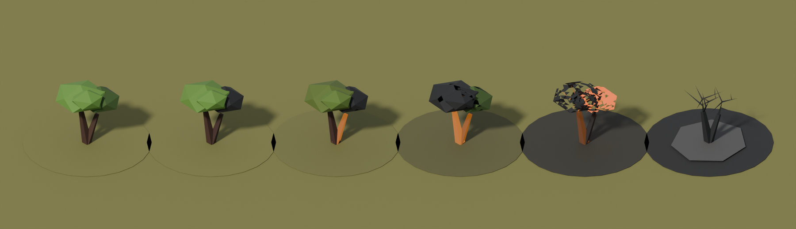
olive_3 — Vecchio a due fusti: ceppaia divisa in due.Generato da scripts/build_vegetation_models.py (Blender). Le immagini sono un’anteprima dell’idea, non il rendering del gioco.